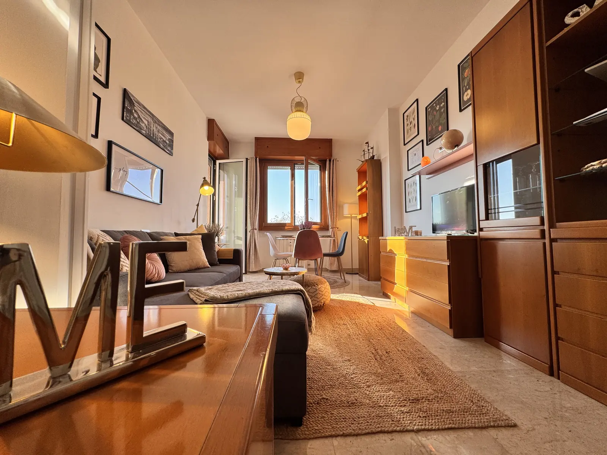
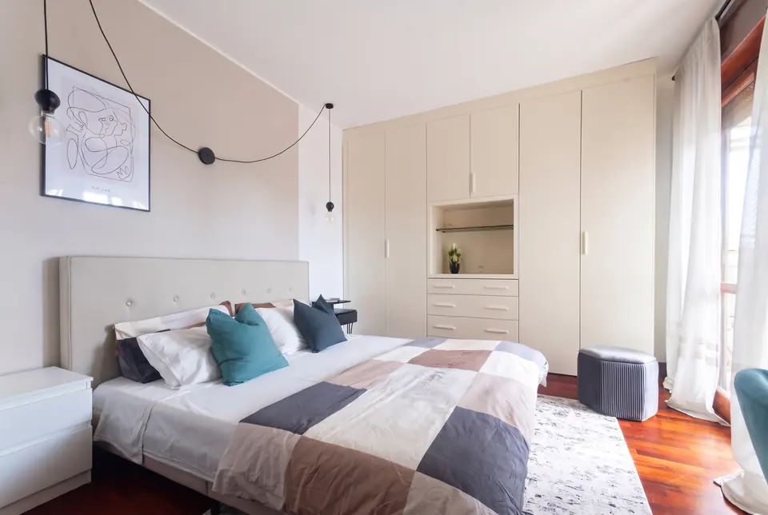
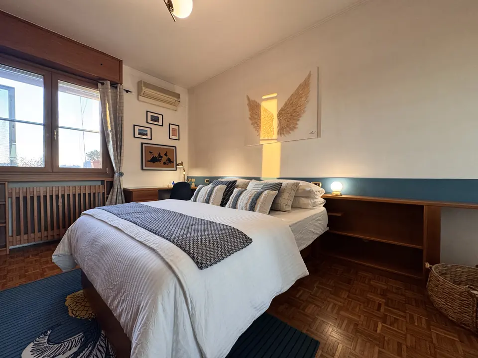
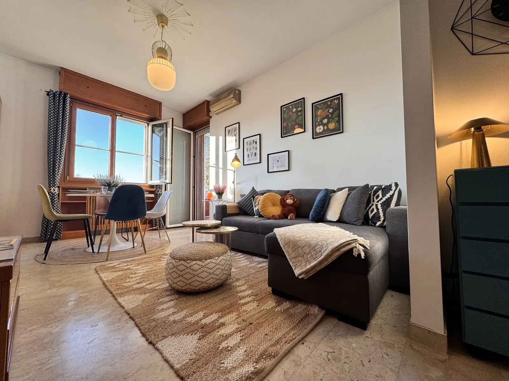

Precotto · fino a 8 ospiti
Bilocale comfort e armonia

Mensile
Bilocale con balcone

Mensile
Monolocale Turro

In arrivo
Bilocale design
Il tuo host

Case scelte e curate una per una, a pochi minuti dalla metro. Per un mese di lavoro, un semestre di studio o una settimana di Salone.
Utenze incluse · contratto registrato · check-in autonomo · risposte in poche ore


